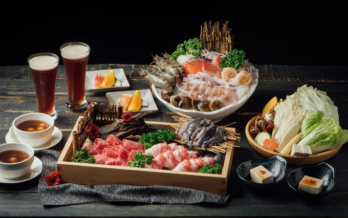
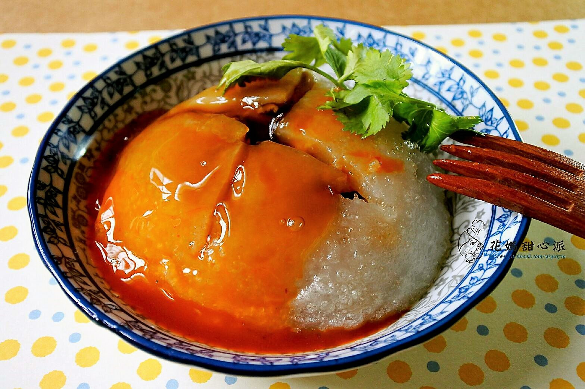
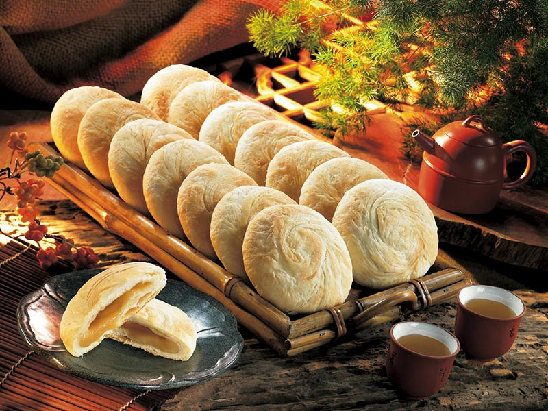

餐廳-銅錵和牛海鮮鍋物
相信火鍋總是大家聚餐的首選吧！銅錵鍋日式涮涮鍋堪稱是火鍋界的 LV，從門面到內部裝潢都是走低調奢華的設計，採用全包廂式用餐空間設計，用餐環境幽雅寧靜，不受鄰客打擾，更提供專人桌邊服務。
小吃-肉圓
已有六十年歷史的「台中肉員」是台中市元老級的肉圓，最大特色是以米漿加上番薯粉做成丸皮，包住以瘦肉、蹄膀和竹筍做成的餡，再放入沙拉油和豬油混合的油鍋中炸，炸熟起鍋的肉丸再淋上特製的醬油膏和甜醬就完成了。吃起來肉鮮皮Ｑ，十分好吃。
伴手禮-太陽餅
提起太陽餅，自然讓人想到臺中，它儼然是臺中市的代名詞。早期太陽餅為純手工製作，並以麥芽糖為餡，製成甜而不膩、皮薄、酥香、餡巧、入口即化的太陽餅，這是它好吃的秘訣所在。近來養生觀念興起，店家將動物性酥油換成植物性酥油，並研發出諸多口味的太陽餅。